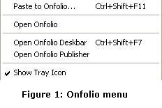
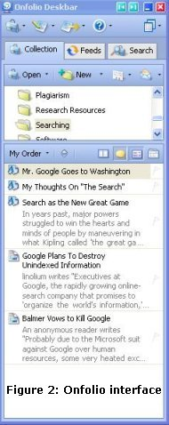
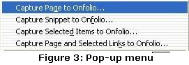

| BOOK AND SOFTWARE REVIEWS | ||||
Onfolio Academic and scientific. Version 2.02 Cambridge, MA:
Onfolio, Inc., 2005. $149.95 ($99.95 to educational institutions; $49.95 to students)
It is rather difficult to find a phrase to define this kind of software simply and succinctly: 'Web research tool', 'Internet information management', or 'online information management' are possibilities, but even Onfolio's producers can't to better than '...a PC application for collection, organizing and sharing information you find online', which is rather long to treat as a keyword! However, it is a good description, because this is exactly what Onfolio helps you to do.
There are a few of these tools around; one of them, NetSnippets was reviewed here some time ago and is, perhaps, Onfolio's nearest competitor and, on a simpler level, there is Evernote, which I haven't reviewed, but which I have used quite a lot. Also available: CyberArticle, eNotebook, iMiser Web Organizer, Keepoint, Research Desk, Rip Clip, SurfSaver and WinMHT, none of which I have tried.
At their basic level, all of these do the same thing: they download and store Web pages and/or 'snippets' from Web pages. Their publicity uses common words and phrases and, in fact the home pages of Onfolio and NetSnippets are so similar that I am surprised their lawyers have not been in touch with each other!
However, this is not intended to be a comparative review of all of these packages, so what does Onfolio actually do? Well, the basics are there in the figure above: it is a software package designed to enable you to download Web pages (or Websites in their entirety), or extracts from pages or documents and to maintain these in a database, which is can be indexed using an Explorer-like interface as well as EndNote entries.
After installation, Onfolio 'lives' in the 'tray' at the bottom right of the screen and, if  you right click on the icon (which looks like the icon at the top left margin of this page) you are offered the possibilities shown in Figure 1. If you choose 'Open Onfolio' your browser is launched and a sidebar is opened; if you choose 'Open Onfolio Deskbar', a floating window is opened, with exactly the same information in it; and if you choose 'Open Onfolio Publisher' a window is opened which enables you to generate a report based on the information you have stored in the database.
The sidebar, or the floating deskbar, (Figure 2) is the means for manipulating the information content captured with Onfolio.You can see here the different elements of the interface: first, the three elements of 'Collection', 'Feeds' and 'Search', which are fairly self-evident in their meaning. The 'collection' is what you have copied from the Web, the 'feeds' are your selected RSS feeds, which can be used to generate a 'newspaper' (of which more later), and 'search' brings up the search window to carry out a search on your collection.
Below this we have the folders in your collection, with, above them icons for opening a collection other than that already open, for creating a new folder, for editing the reference data, and for sending selected items as e-mail (which is part of the 'sharing' function referred to in the picture above). And, finally, we have the brief descriptions of the documents in one of the folders of the collection. This pane can be changed to be at the side of the other panes, rather than underneath - thereby allowing a greater number of folders to be shown in the folder pane.
Capturing material into Onfolio is quite straightforward: when you right-click on a page, or part of a page, such as an image, you find that Onfolio-specific items have been added to the normal array of options; these vary according to the nature of the page and the object, so quite a sophisticated analysis of the page is taking place when the pop-up menu is launched. For example, on one page you might find the items shown in Figure 3,  while another might offer only 'Capture page to Onfolio' and 'Capture site to Onfolio'. In the case of clicking on a picture, you would be offered 'Capture picture to Onfolio'. Clicking on the appropriate menu item results in the relevant information being downloaded from the Web page. You can also 'capture' by right clicking on a page (or a 'snippet' of highlighted text): this results in a popup menu which produces the capture window (F9 will do the same). Here, you can select either a folder in the current collection, or, through a drop down menu, any other collection you have established.
The capture time is rather slow—at least on my machine: for example, it took 25 seconds for the 'save window' to appear after the menu item was clicked; you then have to select a folder in the collection to save the page in, or create a new collection and then a folder and then save and, for a page in Information Research downloading took a further 20 seconds. Figure 4 shows the capture window, from which you can see that some data about the page has also been captured.
Information Research uses meta-tags and the data in some of these has been captured to describe the item: in this case, specifically, the title, the keywords and the abstract, which is here described as comments. This information is then used to provide the basis for an EndNote record, as shown in Figure 5.
You will see that the author of the paper is not shown, although it is available in a meta-tag. Nor is the date shown, but this is not surprising as there is no such information available. As shown earlier, the system also collects the abstract (but puts it into the 'research notes' field) and the keywords. However, the 'Generic' record type is chosen, rather than 'Journal article', and if I select this record type I find that the URL is also collected, but there is still no author or date. The reason for this is that Onfolio has 'scrapers' (which pull down the meta-data) for certain sites only, which are listed under the References sub-menu of Preferences. Consequently, unless you are using these sites or unless you are lucky enough to find documents that have good meta-tags, you are likely to find that the only element collected when a document is saved is the title and all of the additional information will need to be supplied by you to complete the EndNote record. [There has been discussion on this issue on the Onfolio Support Forum, which is worth signing up to.] As the illustration shows, you can configure the system to syncronise a particular 'collection' with a specific EndNote 'library', and when 'Save' is clicked, the item will be recorded in that library.
The RSS feature mentioned above is used to deliver a 'newspaper' of material from your chosen feeds. I was able to import my list of feeds from NewzCrawler, which I have been using for some time, so it was quite easy to set up. Figure 7 shows the Feeds panes of the deskbar along with part of a page from the resulting 'newspaper'. Coupled with the ability to save news items to Onfolio and to search for them, this feature could be very useful for, say, a journalist or a business information specialist. Of course, you could do the same thing with any other feed reader, since any item could be captured by Onfolio in the same way.
Onfolio Publisher, as noted earlier, can be launched from the tray menu and is an integrated report generation program. You can pull either simply references from the taskbar into the report form, or double click on an item and copy bits from it, once it has been launched. So, you can write a short note to someone and include relevant material you have found on the Web. You can edit the document in much the same way as editing a Word document and, when you have finished, you can generate a Web page and publish it directly to your Website, or to mail to a colleague. Figure 7 shows a report in progress, and Figure 8 the report as published to the Web.
Anyone who conducts a good deal of Web-based research, for whatever reason, needs a piece of software like Onfolio and this package's competitive advantage, at least for this 'academic and scientific' version, lies in its integration with EndNote. Like any serious computer application, you have to be well organized in the way you use it. For example, only a single default 'collection' is established, but, if you used this for everything you downloaded, you would very quickly discover that it made nonsense of your attempts to link to different EndNote libraries. So, if you have, say, two or three EndNote libraries on different topics, you need parallel 'collections' so that the syncronisation actually puts the new records in the right place. For a journalist dealing simultaneously with several different stories, one 'collection' for each will be necessary. However, once you have sorted this out, you still have to open the correct 'collection' in the taskbar to capture items to that collection. It would be much more convenient if it was possible to have only one 'collection', with the ability to synchronise different folders within the collection with different EndNote libraries. In a Web browsing session, having to switch from one collection to another could be time-consuming. Care is needed, other words. If you do take care, however, you have a very powerful system at your disposal.
One small point: the material you download is stored in a propietary format in the 'collection' and these items are inaccessible other than through Onfolio. If, for any reason, the collection files (with the suffix .cfs) become corrupted you will have a problem, so you'll need to be sure that your back-up system captures these files. They are established by default in a 'My Collections' folder in 'My Documents', and you'll need to ensue that your back-up covers this folder.
The sub-$50 price of the student version of this piece of software makes it well-priced for the research student market and, provided that the student doesn't fall into the trap of plagiarism, it should help to improve the finished thesis. Other user groups, targeted by the Professional edition (which lacks the EndNote integration), will probably find the integration of the RSS feeds a useful feature and, if you just want to try it out, there is is the Personal edition at $29.95, or you can simply opt for the time-limited trial on In short, Onfolio appears to have something for everyone.
How to cite this review
Wilson, T.D. (2006). Review of: Onfolio Academic and scientific. Version 2.02 Cambridge, MA: Onfolio, Inc., 2005. Information Research, 11(2), review no. SR21 [Available at: http://informationr.net/ir/reviews/sofrev21/sofrev21.html]